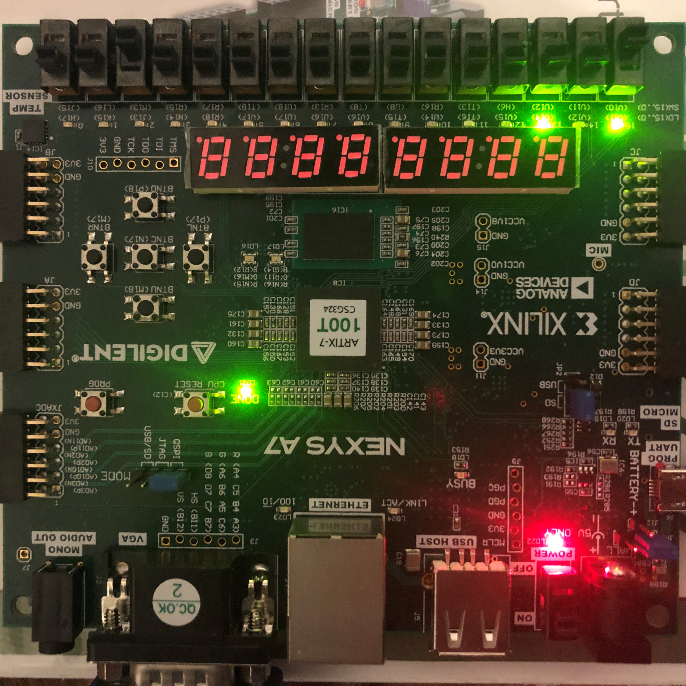

Welcome
I'm from North Carolina, and recently graduated from Duke University with a double major in electrical & computer engineering and computer science, as well as a minor in mathematics. In my free time, I build robots, design keyboards, and experiment with household automation. Here are some of the projects I've worked on, accompanied by a brief description and skills that I've picked up along the way.

Robotic Basketball Hoop


Combat Robotics


Mechanical Keyboard Design


PCB Design



FPGA Programming


Embedded Systems Programming


Nasher Museum Painting Tracker

Mathematical Modeling, HiMCM
Contact
samuelli.pk@gmail.com